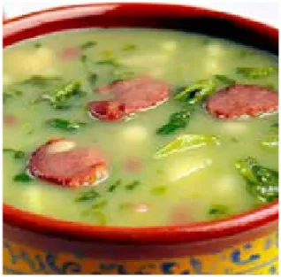

Kapitel 5 · Wein und Speisen kombinieren
Caldo Verde com Chouriço

Suppe aus fein geschnittenem Grünkohl, Knoblauch, Zwiebeln und Kartoffeln mit Scheiben geräucherter Wurst.
Wein: ein fruchtiger Rotwein mit guter Säure und leichtem Körper, etwa ein Alfrocheiro aus Dão, Bairrada oder Lisboa.
Erklärung: Der „Caldo Verde“ ist eine sehr schmackhafte, cremige Suppe. Sie schmeckt leicht krautig und ist sehr gehaltvoll; ein Weißwein passt gut, wir empfehlen aber auch mittelkräftige Rotweine mit leicht fruchtigen Aromen. Je mehr Wurst in der Brühe ist, desto intensiver sollte der Wein sein. Eine mineralische oder holzige Note im Wein betont das Rauchige der Wurst. Die hohe Temperatur der Suppe verhindert, dass man den vollen Geschmack von Speise und Wein erlebt: Sie „betäubt“ die Geschmacksknospen, sodass das Getränk am Gaumen ganz anders schmeckt, und die Hitze verändert auch die Wahrnehmung des Alkohols im Wein.